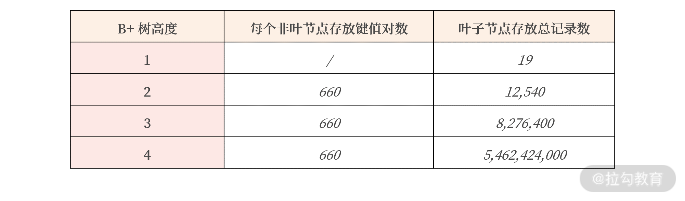

- 00 开篇词 从业务出发，开启海量 MySQL 架构设计.md.html
- 01 数字类型：避免自增踩坑.md.html
- 02 字符串类型：不能忽略的 COLLATION.md.html
- 03 日期类型：TIMESTAMP 可能是巨坑.md.html
- 04 非结构存储：用好 JSON 这张牌.md.html
- 05 表结构设计：忘记范式准则.md.html
- 06 表压缩：不仅仅是空间压缩.md.html
- 07 表的访问设计：你该选择 SQL 还是 NoSQL？.md.html
- 08 索引：排序的艺术.md.html
- 09 索引组织表：万物皆索引.md.html
- 10 组合索引：用好，性能提升 10 倍！.md.html
- 11 索引出错：请理解 CBO 的工作原理.md.html
- 12 JOIN 连接：到底能不能写 JOIN？.md.html
- 13 子查询：放心地使用子查询功能吧！.md.html
- 14 分区表：哪些场景我不建议用分区表？.md.html
- 15 MySQL 复制：最简单也最容易配置出错.md.html
- 16 读写分离设计：复制延迟？其实是你用错了.md.html
- 17 高可用设计：你怎么活用三大架构方案？.md.html
- 18 金融级高可用架构：必不可少的数据核对.md.html
- 19 高可用套件：选择这么多，你该如何选？.md.html
- 20 InnoDB Cluster：改变历史的新产品.md.html
- 21 数据库备份：备份文件也要检查！.md.html
- 22 分布式数据库架构：彻底理解什么叫分布式数据库.md.html
- 23 分布式数据库表结构设计：如何正确地将数据分片？.md.html
- 24 分布式数据库索引设计：二级索引、全局索引的最佳设计实践.md.html
- 25 分布式数据库架构选型：分库分表 or 中间件 ？.md.html
- 26 分布式设计之禅：全链路的条带化设计.md.html
- 27 分布式事务：我们到底要不要使用 2PC？.md.html
- 捐赠
08 索引：排序的艺术
在模块一中，我们学习了怎么根据合适的类型正确地创建一张表，但创建的表不能立刻用在真正的业务系统上。因为表结构设计只是设计数据库最初的环节之一，我们还缺少数据库设计中最为重要的一个环节——索引设计，只有正确设计索引，业务才能达到上线的初步标准。
所以模块二我会讲索引的设计、业务应用与调优等案例。今天我们先来学习关系型数据库最核心的概念——索引，对索引做一个初步的概述，让你对数据库中的索引有一个体系的认知，并用好 B+ 树索引。
索引是什么？
相信你在面试时，通常会被问到“什么是索引？”而你一定要能脱口而出：索引是提升查询速度的一种数据结构。
索引之所以能提升查询速度，在于它在插入时对数据进行了排序（显而易见，它的缺点是影响插入或者更新的性能）。
所以，索引是一门排序的艺术，有效地设计并创建索引，会提升数据库系统的整体性能。在目前的 MySQL 8.0 版本中，InnoDB 存储引擎支持的索引有 B+ 树索引、全文索引、R 树索引。这一讲我们就先关注使用最为广泛的 B+ 树索引。
B+树索引结构
B+ 树索引是数据库系统中最为常见的一种索引数据结构，几乎所有的关系型数据库都支持它。
那为什么关系型数据库都热衷支持 B+树索引呢？因为它是目前为止排序最有效率的数据结构。像二叉树，哈希索引、红黑树、SkipList，在海量数据基于磁盘存储效率方面远不如 B+ 树索引高效。
所以，上述的数据结构一般仅用于内存对象，基于磁盘的数据排序与存储，最有效的依然是 B+ 树索引。
B+树索引的特点是： 基于磁盘的平衡树，但树非常矮，通常为 3~4 层，能存放千万到上亿的排序数据。树矮意味着访问效率高，从千万或上亿数据里查询一条数据，只用 3、4 次 I/O。
又因为现在的固态硬盘每秒能执行至少 10000 次 I/O ，所以查询一条数据，哪怕全部在磁盘上，也只需要 0.003 ~ 0.004 秒。另外，因为 B+ 树矮，在做排序时，也只需要比较 3~4 次就能定位数据需要插入的位置，排序效率非常不错。
B+ 树索引由根节点（root node）、中间节点（non leaf node）、叶子节点（leaf node）组成，其中叶子节点存放所有排序后的数据。当然也存在一种比较特殊的情况，比如高度为 1 的B+ 树索引：

上图中，第一个列就是 B+ 树索引排序的列，你可以理解它是表 User 中的列 id，类型为 8 字节的 BIGINT，所以列 userId 就是索引键（key），类似下表：
CREATE TABLE User (
id BIGINT AUTO_INCREMENT PRIMARY KEY,
name VARCHAR(128) NOT NULL,
sex CHAR(6) NOT NULL,
registerDate DATETIME NOT NULL,
...
)
所有 B+ 树都是从高度为 1 的树开始，然后根据数据的插入，慢慢增加树的高度。你要牢记：索引是对记录进行排序， 高度为 1 的 B+ 树索引中，存放的记录都已经排序好了，若要在一个叶子节点内再进行查询，只进行二叉查找，就能快速定位数据。
可随着插入 B+ 树索引的记录变多，1个页（16K）无法存放这么多数据，所以会发生 B+ 树的分裂，B+ 树的高度变为 2，当 B+ 树的高度大于等于 2 时，根节点和中间节点存放的是索引键对，由（索引键、指针）组成。
索引键就是排序的列，而指针是指向下一层的地址，在 MySQL 的 InnoDB 存储引擎中占用 6 个字节。下图显示了 B+ 树高度为 2 时，B+ 树索引的样子：

可以看到，在上面的B+树索引中，若要查询索引键值为 5 的记录，则首先查找根节点，查到键值对（20，地址），这表示小于 20 的记录在地址指向的下一层叶子节点中。接着根据下一层地址就可以找到最左边的叶子节点，在叶子节点中根据二叉查找就能找到索引键值为 5 的记录。
那一个高度为 2 的 B+ 树索引，理论上最多能存放多少行记录呢?
在 MySQL InnoDB 存储引擎中，一个页的大小为 16K，在上面的表 User 中，键值 userId 是BIGINT 类型，则：
根节点能最多存放以下多个键值对 = 16K / 键值对大小(8+6) ≈ 1100
再假设表 User 中，每条记录的大小为 500 字节，则：
叶子节点能存放的最多记录为 = 16K / 每条记录大小 ≈ 32
综上所述，树高度为 2 的 B+ 树索引，最多能存放的记录数为：
总记录数 = 1100 * 32 = 35,200
也就是说，35200 条记录排序后，生成的 B+ 树索引高度为 2。在 35200 条记录中根据索引键查询一条记录只需要查询 2 个页，一个根叶，一个叶子节点，就能定位到记录所在的页。
高度为 3 的 B+ 树索引本质上与高度 2 的索引一致，如下图所示，不再赘述：

同理，树高度为 3 的 B+ 树索引，最多能存放的记录数为：
总记录数 = 1100（根节点） * 1100（中间节点） * 32 = 38,720,000
讲到这儿，你会发现，高度为 3 的 B+ 树索引竟然能存放 3800W 条记录。在 3800W 条记录中定位一条记录，只需要查询 3 个页。那么 B+ 树索引的优势是否逐步体现出来了呢？
不过，在真实环境中，每个页其实利用率并没有这么高，还会存在一些碎片的情况，我们假设每个页的使用率为60%，则：

表格显示了 B+ 树的威力，即在 50 多亿的数据中，根据索引键值查询记录，只需要 4 次 I/O，大概仅需 0.004 秒。如果这些查询的页已经被缓存在内存缓冲池中，查询性能会更快。
在数据库中，上述的索引查询请求对应的 SQL 语句为：
SELECT * FROM User WHERE id = ?
用户可以通过命令 EXPLAIN 查看是否使用索引：
mysql> EXPLAIN SELECT * FROM User WHERE id = 1\G
********************** 1. row **********************
id: 1
select_type: SIMPLE
table: User
partitions: NULL
type: const
possible_keys: PRIMARY
key: PRIMARY
key_len: 8
ref: const
rows: 1
filtered: 100.00
Extra: NULL
在输出的 EXPLIAN 结果中，可以看到列 key 显示 PRIMARY，这表示根据主键索引进行查询。若没有根据索引进行查询，如根据性别进行查询，则会显示类似如下内容：
mysql> EXPLAIN SELECT * FROM User WHERE sex = 'male'\G
********************** 1. row **********************
id: 1
select_type: SIMPLE
table: User
partitions: NULL
type: ALL
possible_keys: NULL
key: NULL
key_len: NULL
ref: NULL
rows: 986400
filtered: 50.00
Extra: Using where
讲到这儿，你应该了解了 B+ 树索引的组织形式，以及为什么在上亿的数据中可以通过B+树索引快速定位查询的记录。但 B+ 树的查询高效是要付出代价的，就是我们前面说的插入性能问题，接下去咱们就来讨论一下。
优化 B+ 树索引的插入性能
B+ 树在插入时就对要对数据进行排序，但排序的开销其实并没有你想象得那么大，因为排序是 CPU 操作（当前一个时钟周期 CPU 能处理上亿指令）。
真正的开销在于 B+ 树索引的维护，保证数据排序，这里存在两种不同数据类型的插入情况。
- 数据顺序（或逆序）插入： B+ 树索引的维护代价非常小，叶子节点都是从左往右进行插入，比较典型的是自增 ID 的插入、时间的插入（若在自增 ID 上创建索引，时间列上创建索引，则 B+ 树插入通常是比较快的）。
- 数据无序插入： B+ 树为了维护排序，需要对页进行分裂、旋转等开销较大的操作，另外，即便对于固态硬盘，随机写的性能也不如顺序写，所以磁盘性能也会收到较大影响。比较典型的是用户昵称，每个用户注册时，昵称是随意取的，若在昵称上创建索引，插入是无序的，索引维护需要的开销会比较大。
你不可能要求所有插入的数据都是有序的，因为索引的本身就是用于数据的排序，插入数据都已经是排序的，那么你就不需要 B+ 树索引进行数据查询了。
所以对于 B+ 树索引，在 MySQL 数据库设计中，仅要求主键的索引设计为顺序，比如使用自增，或使用函数 UUID_TO_BIN 排序的 UUID，而不用无序值做主键。
我们再回顾 05 讲的自增、UUID、UUID 排序的插入性能对比：

可以看到，UUID 由于是无序值，所以在插入时性能比起顺序值自增 ID 和排序 UUID，性能上差距比较明显。
所以，我再次强调： 在表结构设计时，主键的设计一定要尽可能地使用顺序值，这样才能保证在海量并发业务场景下的性能。
以上就是索引查询和插入的知识，接下来我们就分析怎么在 MySQL 数据库中查看 B+ 树索引。
MySQL 中 B+ 树索引的设计与管理
在 MySQL 数据库中，可以通过查询表 mysql.innodb_index_stats 查看每个索引的大致情况：
SELECT
table_name,index_name,stat_name,
stat_value,stat_description
FROM innodb_index_stats
WHERE table_name = 'orders' and index_name = 'PRIMARY';
+----------+------------+-----------+------------+------------------+
|table_name| index_name | stat_name | stat_value |stat_description |
+----------+-------------------+------------+------------+----------+
| orders | PRIMARY|n_diff_pfx01|5778522 | O_ORDERKEY |
| orders | PRIMARY|n_leaf_pages|48867 | Number of leaf pages |
| orders | PRIMARY|size |49024 | Number of pages in the index|
+--------+--------+------------+------+-----------------------------+
3 rows in set (0.00 sec)
从上面的结果中可以看到，表 orders 中的主键索引，大约有 5778522 条记录，其中叶子节点一共有 48867 个页，索引所有页的数量为 49024。根据上面的介绍，你可以推理出非叶节点的数量为 49024 ~ 48867，等于 157 个页。
另外，我看见网上一些所谓的 MySQL“军规”中写道“一张表的索引不能超过 5 个”。根本没有这样的说法，完全是无稽之谈。
在我看来，如果业务的确需要很多不同维度进行查询，那么就该创建对应多索引，这是没有任何值得商讨的地方。
真正在业务上遇到的问题是： 由于业务开发同学对数据库不熟悉，创建 N 多索引，但实际这些索引从创建之初到现在根本就没有使用过！因为优化器并不会选择这些低效的索引，这些无效索引占用了空间，又影响了插入的性能。
那你怎么知道哪些 B+树索引未被使用过呢？在 MySQL 数据库中，可以通过查询表sys.schema_unused_indexes，查看有哪些索引一直未被使用过，可以被废弃：
SELECT * FROM schema_unused_indexes
WHERE object_schema != 'performance_schema';
+---------------+-------------+--------------+
| object_schema | object_name | index_name |
+---------------+-------------+--------------+
| sbtest | sbtest1 | k_1 |
| sbtest | sbtest2 | k_2 |
| sbtest | sbtest3 | k_3 |
| sbtest | sbtest4 | k_4 |
| tpch | customer | CUSTOMER_FK1 |
| tpch | lineitem | LINEITEM_FK2 |
| tpch | nation | NATION_FK1 |
| tpch | orders | ORDERS_FK1 |
| tpch | partsupp | PARTSUPP_FK1 |
| tpch | supplier | SUPPLIER_FK1 |
+---------------+-------------+--------------+
如果数据库运行时间比较长，而且索引的创建时间也比较久，索引还出现在上述结果中，DBA 就可以考虑删除这些没有用的索引。
而 MySQL 8.0 版本推出了索引不可见（Invisible）功能。在删除废弃索引前，用户可以将索引设置为对优化器不可见，然后观察业务是否有影响。若无，DBA 可以更安心地删除这些索引：
ALTER TABLE t1
ALTER INDEX idx_name INVISIBLE/VISIBLE;
总结
这一讲我对索引做了一个较为初步地概述，学完这一讲，我相信你能非常清晰地知道：
- 索引是加快查询的一种数据结构，其原理是插入时对数据排序，缺点是会影响插入的性能；
- MySQL 当前支持 B+树索引、全文索引、R 树索引；
- B+ 树索引的高度通常为 3~4 层，高度为 4 的 B+ 树能存放 50 亿左右的数据；
- 由于 B+ 树的高度不高，查询效率极高，50 亿的数据也只需要插叙 4 次 I/O；
- MySQL 单表的索引没有个数限制，业务查询有具体需要，创建即可，不要迷信个数限制；
- 可以通过表 sys.schema_unused_indexes 和索引不可见特性，删除无用的索引。
总的来讲，关于索引虽然老生常谈，但是它是所有关系型数据库的核心，我希望你反复阅读本文，真正理解 B+ 树索引的实现。
© 2019 - 2023 Liangliang Lee. Powered by gin and hexo-theme-book.